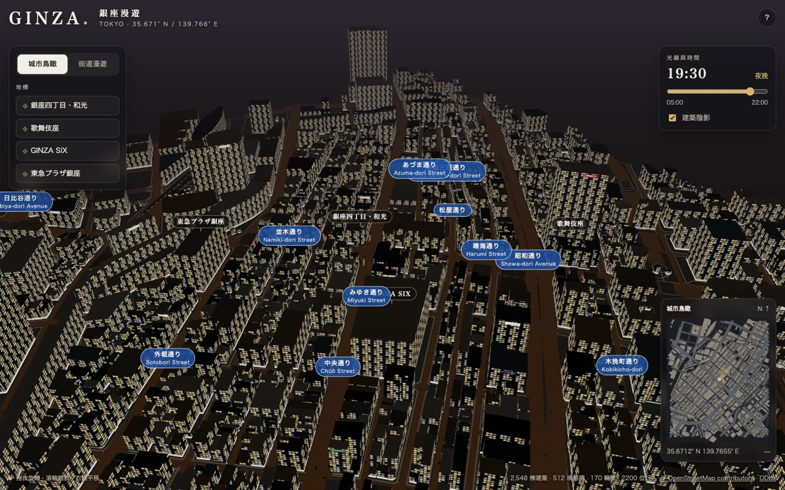
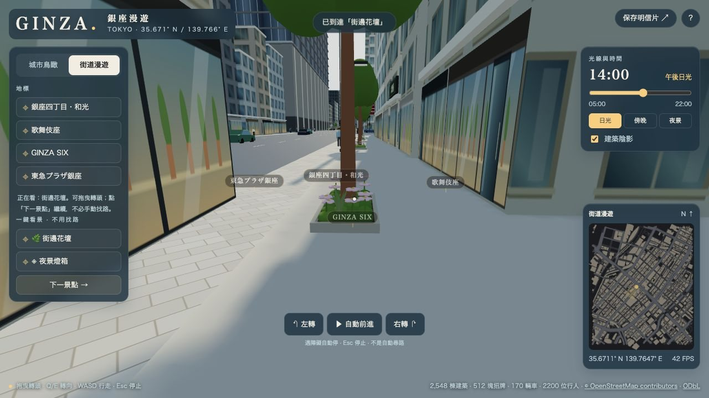
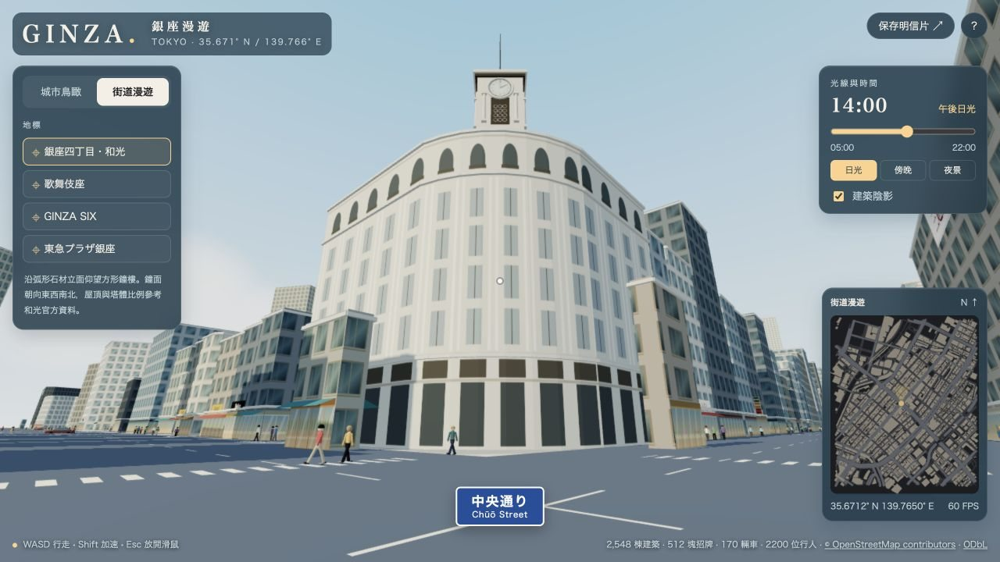
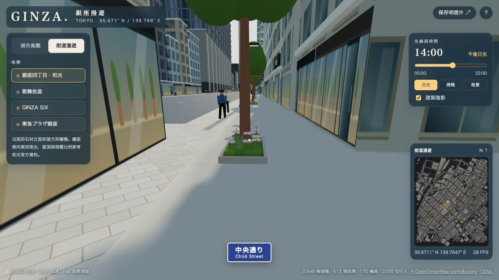

產品 · 功能
功能一覽
使用者能看到、能操作的東西。每項標明「實景參考」或「示意」。
解決什麼問題
接手時最常問的是「這功能在畫面哪裡、是真的還是畫出來的」。本頁逐項列出，並附截圖。
怎麼處理
| 功能 | 使用者看到什麼 | 真實程度 |
|---|---|---|
| 城市鳥瞰 | 拖曳旋轉、滾輪縮放（朝游標方向）、右鍵平移；浮出街名 | 建築外形來自 OSM；高度多為估算 |
| 街道漫遊 | WASD／方向鍵、Shift 加速、滑鼠轉頭；碰撞沿牆滑動 | 碰撞以建築外形計算 |
| 輕鬆看景 | 一鍵到「街邊花壇／夜景燈箱」；自動前進、遇阻擋停止 | 觀景點為程式挑選，非尋路 |
| 地標定位 | 飛到和光等 4 處上空或街上最佳觀看點 | 和光、GINZA SIX 依官方資料校正 |
| 店面與店內 | 約 5.5 m 一節的櫥窗；玻璃後可看到 12 種業態的店內陳列 | 業態取自鄰近 OSM 店家分類；陳列為同業態典型構成 |
| 招牌 | OSM 真實店名：橫式、直式、大樓頂部、多租戶袖看板 | 店名真實；招牌位置為點位推算 |
| 花壇與行道樹 | 中央通り 104 處綠化點、四區不同花色 | 參考官方植栽主題；非逐株實測 |
| 日夜 | 05:00–22:00 滑桿與日光／傍晚／夜景快捷鍵 | 太陽位置為近似計算；夜光為靜態近似 |
| 明信片 | 把目前視角存成 PNG（不含介面） | — |

常見問題：截圖為 2026-10-09 版本，建築配色已調整，外觀可能不同。
下一步：② 網頁載入與組場景

常見問題：若玻璃後是一片白或黑，見故障排查「店內一片白」。
下一步：③ 店面與店內縱深

常見問題：自動前進遇到牆會停，這是設計而不是當機。
下一步：故障排查

常見問題：截圖為 2026-10-09 版本。
下一步：技術棧

常見問題：花壇擋路時，見「想加 X 改哪」的綠化段。
下一步：想加 X 改哪
考慮了哪些情況
| 情境 | 系統怎麼應對 |
|---|---|
| 滑鼠無法鎖定（Pointer Lock 被擋） | 改用拖曳轉頭 |
| 使用者想專心看景 | 「專注看景」隱藏面板，保留停止自動前進的控制 |
| 標籤彼此重疊或擋住介面 | 街名與地標標籤自動避讓 |
為什麼這樣設計
「示意」要說出來
README、docs 與本 wiki 都標出哪些是示意：曾經放過未核實的路燈、遮陽棚與藍色名牌，後來撤下。接手時新增細節也請比照：查得到來源才當「實景」，否則寫明示意。